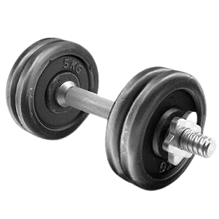
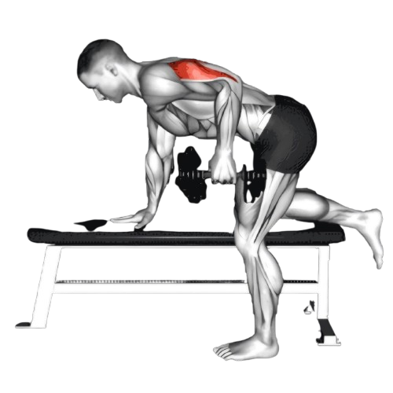
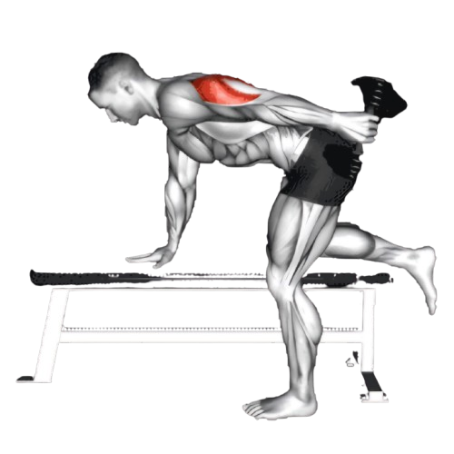

덤벨 트라이셉 킥 백

- 한 손에 덤벨을 잡고, 반대쪽 손은 벤치나 허벅지에 올려 몸을 지탱한다. 허리를 곧게 펴고 상체를 바닥과 평행하게 유지한다.
- 덤벨을 잡은 쪽 팔의 팔꿈치를 90도 각도로 굽힌 상태에서, 상완(팔 윗부분)을 몸통에 붙이고, 팔꿈치가 고정되도록 한다.
- 이때 호흡은 마신다.
- 팔꿈치를 고정한 상태에서 덤벨을 뒤로 밀어내며 팔을 곧게 펴준다. 이때 삼두근의 수축을 느끼며 동작을 수행한다.
- 팔을 완전히 펴서 삼두근에 최대한의 긴장감을 느낀 후, 천천히 팔을 다시 굽혀 시작 자세로 돌아옵니다.
- 한쪽 팔에 원하는 횟수만큼 반복한 후, 반대쪽 팔로도 동일하게 반복한다.
- 이때 호흡은 뱉는다.

주의사항
- 팔꿈치가 흔들리면 삼두근 대신 다른 근육에 자극이 가기 때문에 팔꿈치를 고정해 움직이지 않도록 주의한다.
- 상체가 흔들리지 않게 허리를 곧게 핀다.
- 덤벨을 들어올릴 때 반동을 사용하지 않는다.
- 지나치게 무거운 중량은 잘못된 자세를 유발할 수 있어 부상의 원인이 된다.
운동부위 및 효과
- 삼두근
- 삼두근에 집중해 팔 라인을 예쁘게 가꾸는 데 효과적이며, 초보자도 쉽게 접근할 수 있는 운동이다.